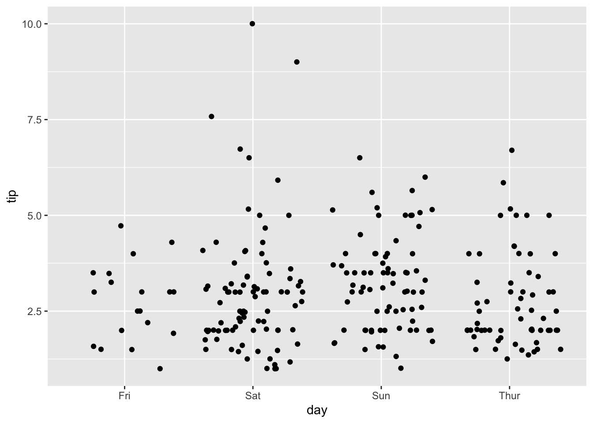
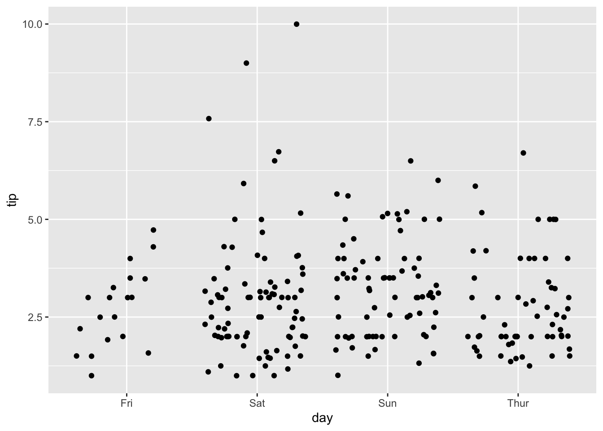
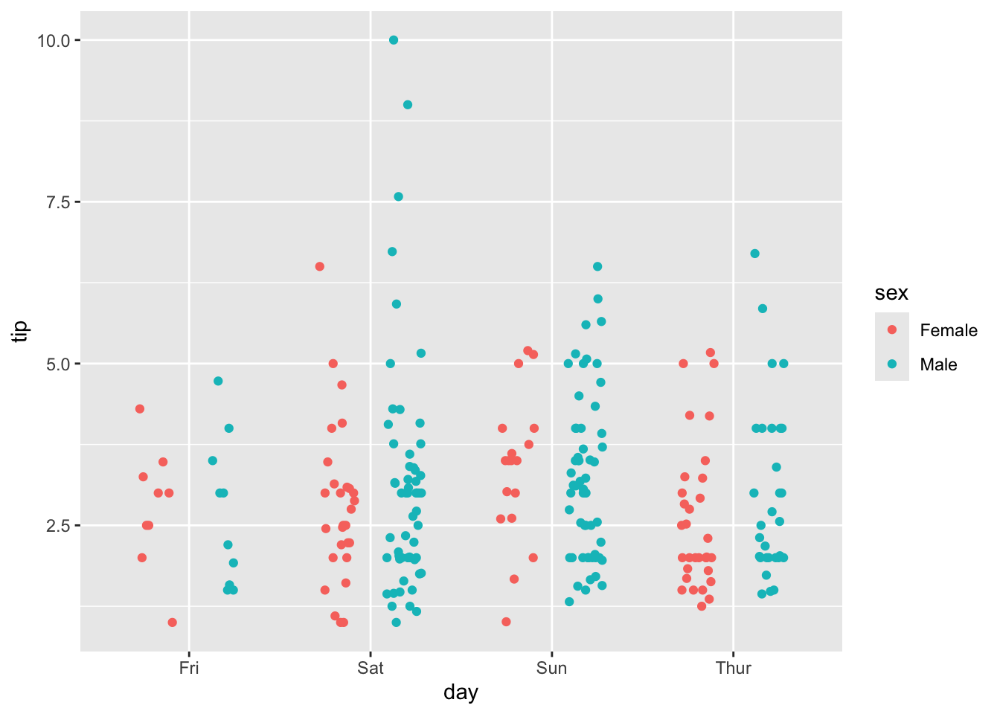
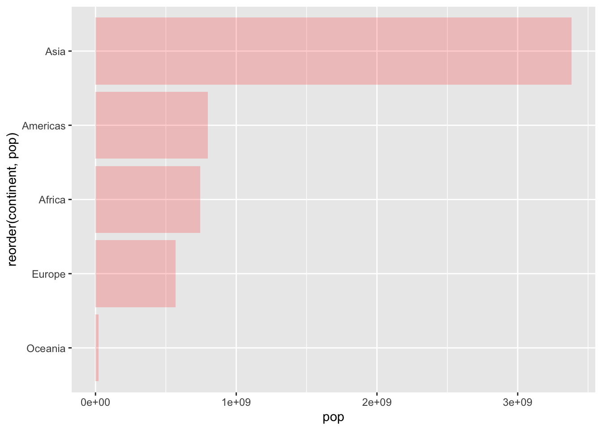
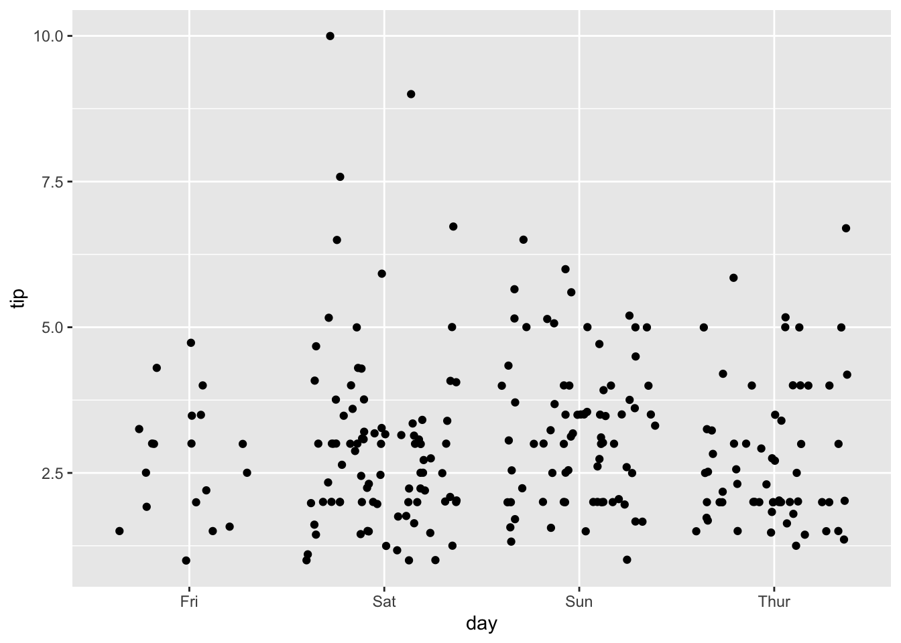
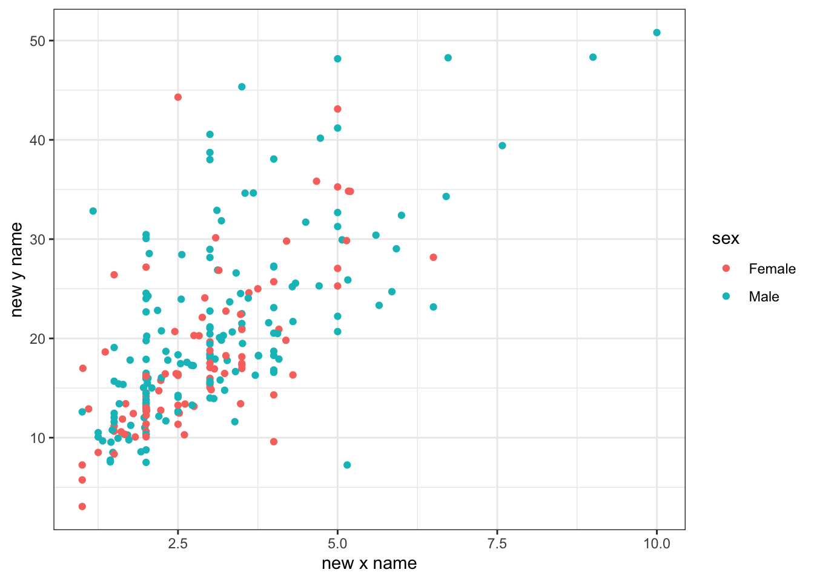
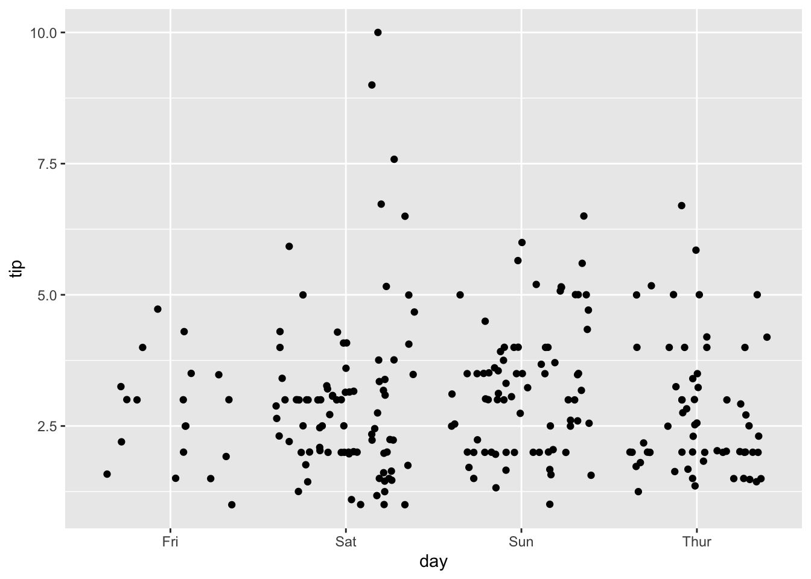
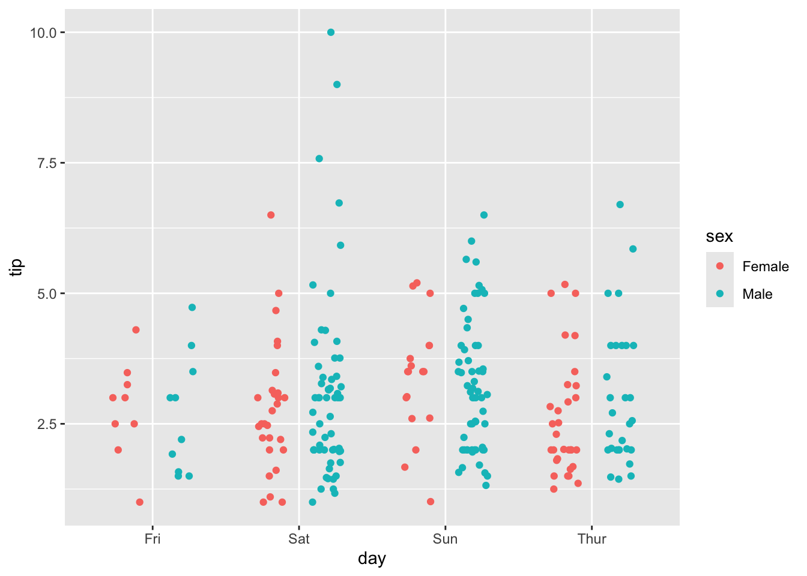
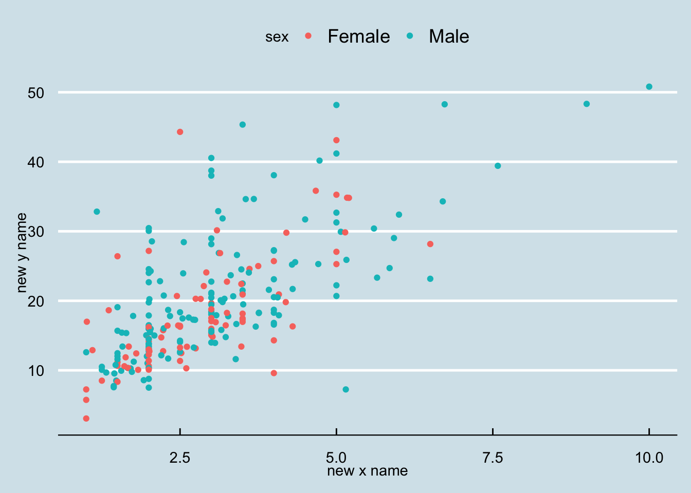

Code
library(tidyverse)
library(gapminder)
library(ggpubr)
library(ggthemr)
library(ggplot2)
packageVersion("ggplot2")[1] '3.5.0'
library(tidyverse)
library(gapminder)
library(ggpubr)
library(ggthemr)
library(ggplot2)
packageVersion("ggplot2")[1] '3.5.0'library(reshape2)
tips=tips
head(tips) total_bill tip sex smoker day time size
1 16.99 1.01 Female No Sun Dinner 2
2 10.34 1.66 Male No Sun Dinner 3
3 21.01 3.50 Male No Sun Dinner 3
4 23.68 3.31 Male No Sun Dinner 2
5 24.59 3.61 Female No Sun Dinner 4
6 25.29 4.71 Male No Sun Dinner 4data001=gapminder
head(data001)# A tibble: 6 × 6
country continent year lifeExp pop gdpPercap
<fct> <fct> <int> <dbl> <int> <dbl>
1 Afghanistan Asia 1952 28.8 8425333 779.
2 Afghanistan Asia 1957 30.3 9240934 821.
3 Afghanistan Asia 1962 32.0 10267083 853.
4 Afghanistan Asia 1967 34.0 11537966 836.
5 Afghanistan Asia 1972 36.1 13079460 740.
6 Afghanistan Asia 1977 38.4 14880372 786.p=ggplot(tips, aes(tip, total_bill)) + geom_point()
p
p=ggplot(tips, aes(tip, total_bill,color=sex)) + geom_point()
p
p=ggplot(tips, aes(tip, total_bill,colour = sex,size=size)) + geom_point()
p
data002= data001 %>% group_by(continent,year) %>% summarise(pop=sum(pop))p=ggplot(data002 %>%filter(continent=='Asia'), aes(year, pop)) + geom_line()
p
p=ggplot(data002, aes(year, pop,colour = continent)) + geom_line()
p
data002= data001 %>% filter(year==1997,continent %in% c('Asia','Africa'))ggplot(data002, aes(gdpPercap)) +
geom_histogram()
ggplot(data002, aes(gdpPercap,,fill = continent)) +geom_histogram(position = 'dodge')
data002= data001 %>% filter(year==1997) %>% group_by(continent) %>% summarise(pop=sum(pop))ggplot(data002, aes(x=continent, y=pop)) +
geom_bar(stat="identity")+scale_y_continuous(labels = scales::comma)
p=ggplot(tips, aes(day,tip,fill=day)) + geom_boxplot()
p
p=ggplot(tips, aes(day,tip,fill=sex)) + geom_boxplot()
p
p=ggplot(tips, aes(day,tip)) + geom_jitter()
p
p=ggplot(tips, aes(day,tip,color=sex)) + geom_jitter(position=position_jitterdodge())
pp=ggplot(tips, aes(tip,total_bill,)) + geom_point(aes(color=sex)) + facet_wrap("day")
p
make 3 plot per row
p=ggplot(tips, aes(tip,total_bill,)) + geom_point(aes(color=sex)) + facet_wrap("day",ncol = 3)
p
p=ggplot(tips, aes(tip, total_bill,color=sex)) + geom_point()+ ggtitle("tip by sex")
p
p=ggplot(tips, aes(tip, total_bill,color=sex)) + geom_point()+ ggtitle("tip by sex")+theme(
plot.margin = margin(2, 2, 5, 5, "cm"))
p
p=ggplot(tips, aes(tip, total_bill,color=sex)) + geom_point()+ scale_x_continuous(name="new x name")+ scale_y_continuous(name="new y name")
pp=ggplot(tips, aes(tip, total_bill,color=sex)) + geom_point()+ scale_x_continuous(name="new x name")+ scale_y_continuous(name="new y name")
p+ theme_bw()
p+ theme_light()
library("ggthemes")
p+ theme_economist()
p+ theme_economist()
ggsave("myplot.png")#pak::pak('thomasp85/gganimate')
library(gganimate)
p=ggplot(gapminder, aes(gdpPercap, lifeExp, size = pop, colour = country)) +
geom_point(alpha = 0.7, show.legend = FALSE) +
scale_colour_manual(values = country_colors) +
scale_size(range = c(2, 12)) +
scale_x_log10() +
# Here comes the gganimate specific bits
labs(title = 'Year: {frame_time}', x = 'GDP per capita', y = 'life expectancy',colour = "country") +
transition_time(year) +
ease_aes('linear')
p